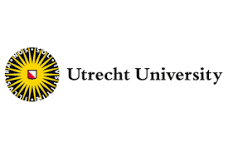

Het Project
In grote steden is de gezondheid slechter en de levensverwachting korter dan in landelijke omgevingen.Dit is mede een gevolg van een lagere lichamelijke activiteit van de inwoners.
In dit project willen we meer in detail begrijpen hoe de fysieke activiteit van stedelingen kan worden verhoogd door het gebruik van gepersonaliseerde app-technologie.
Als je nog vragen hebt Stuur ons dan een email (n.nibbeling@hva.nl)
